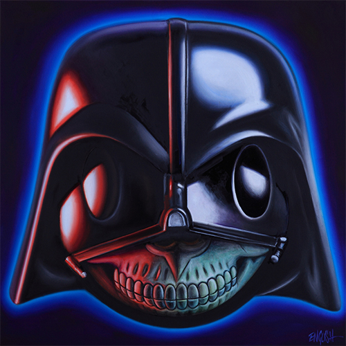
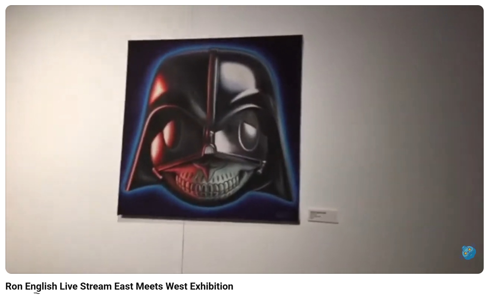
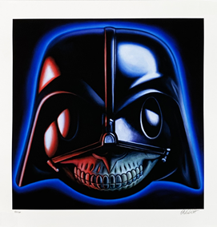
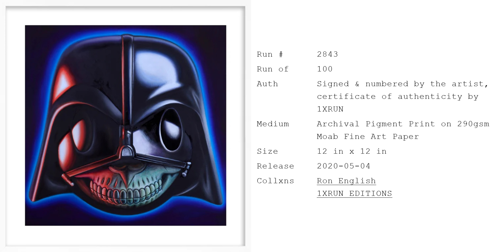
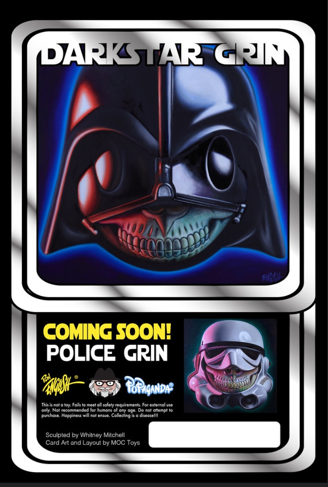

Exhibitions
SCOPE Miami Beach 2015, SCOPE Pavilion, 801 Ocean Drive, Miami Beach, Florida, US, December 2–6, 2015.
East Meets West Exhibition, May 6–14, 2017.
Notes
This work appears at 1:51 in The Toy Chronicle’s YouTube video Ron English Live Stream East Meets West Exhibition.
This work also appears in Arrested Motion’s coverage of SCOPE Miami Beach 2015.
This composition was later adapted by the artist as a related archival pigment print on 290gsm Moab Fine Art Paper, published by 1XRUN as Run #2843. The print was released on May 4, 2020, measured 12 × 12 inches, and was issued in a run of 100, signed and numbered by the artist with a certificate of authenticity from 1XRUN.
The image also appears in packaging documentation for the related Dark Star Grin toy release.
Ancillary Documentation




